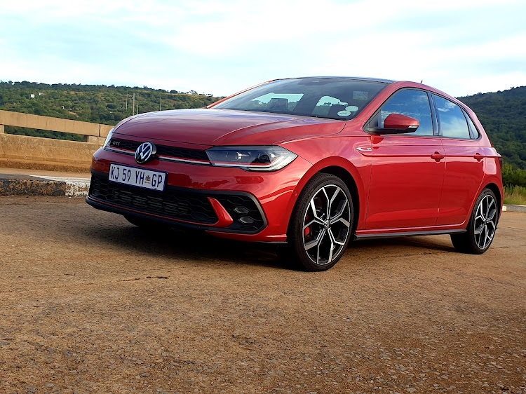
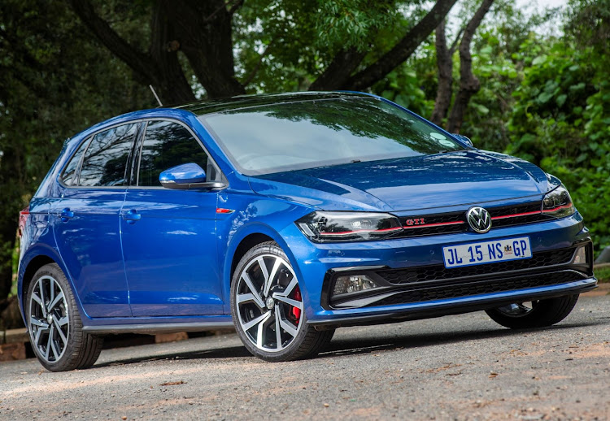

VW GTI MK8 (2016)
 The Volkswagen Golf Mk6 (code named Typ 5K) is a compact car and the sixth generation of the Volkswagen Golf. The Volkswagen Golf Mk6 is the successor to the Volkswagen Golf Mk5 and It was unveiled at the Paris Motor Show in October 2008 for the 2009 model year. Volkswagen released pictures and information on August 6, 2008.
Manufacturer: Volkswagen- Production: 2008–2013 2009–2013 (wagon) 2011–2016 (cabriolet)
- Assembly: Germany South Africa
- Designer: Walter de Silva
- Colors Available: Grey, Black, White, Blue
- Price: R 25,000 (Payment over 24 months available)